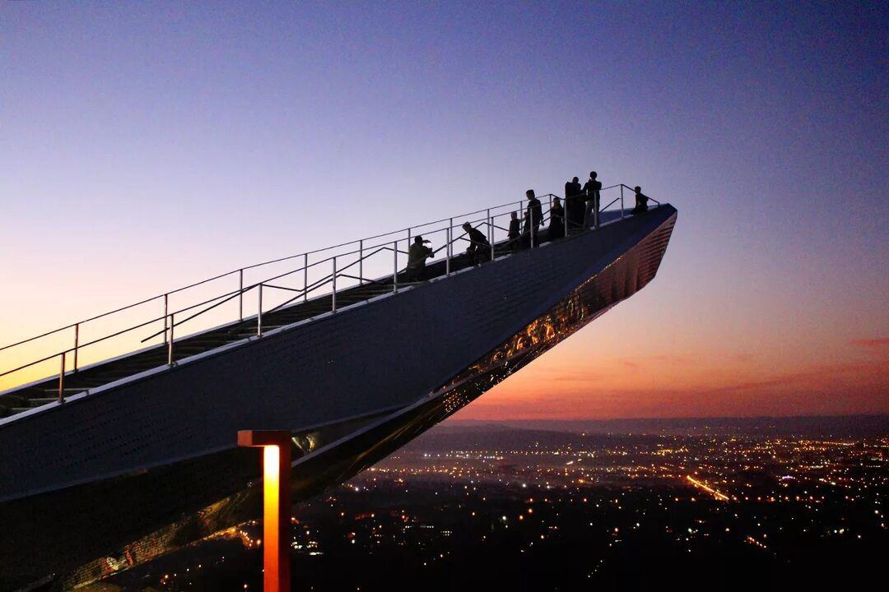
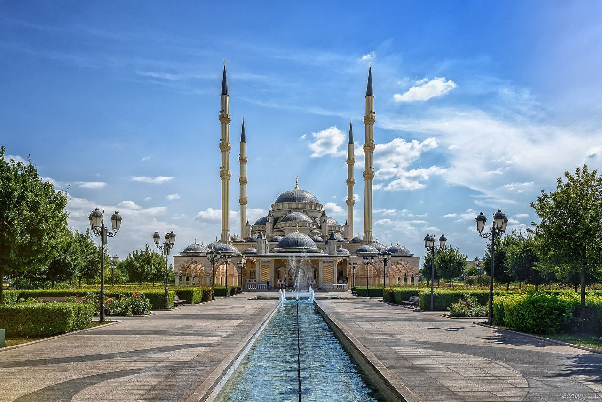
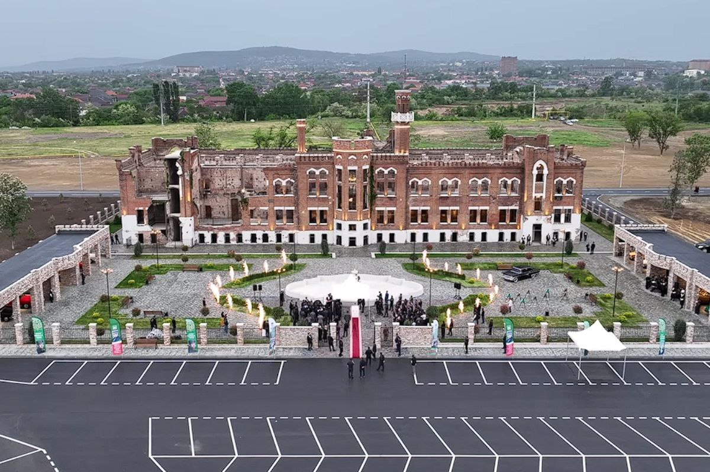
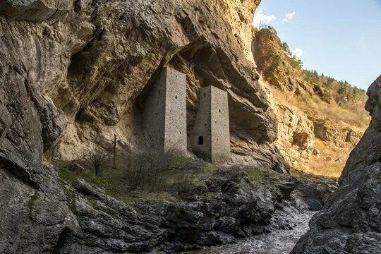
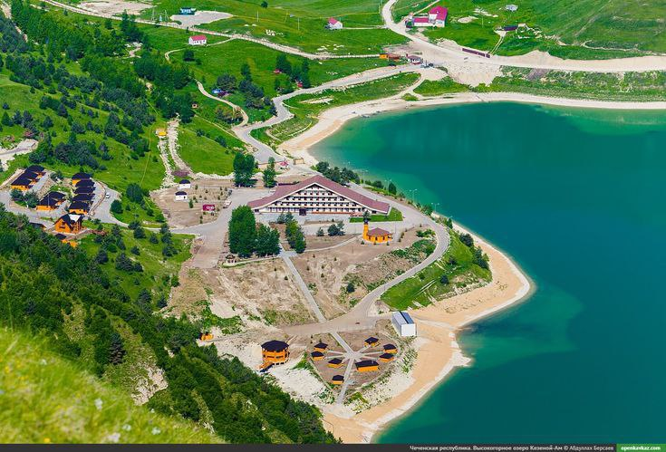

Возвращение домой: есть путь обратно
Будучи чеченкой, я уже давно не посещала свою родину, поэтому этот визит оставил у меня много положительных эмоций. Я хочу чтобы вы, как и я, хоть немного увидели этот мир..
Места, которые я посетила
Нихалойские водопады

Лестница в небеса
Мечеть "Сердце Чечни"
Курорт Ведучи

Английский замок
Ушкалойские башни
Озеро Кезеной-Ам
Мои впечатления
| Место | Адрес | Моё впечатление |
|---|---|---|
| Нихалойские водопады | ||
| Лестница в небеса | ||
| Мечеть "Сердце Чечни" | ||
| Курорт Ведучи | ||
| Английский замок | ||
| Ушкалойские башни | ||
| Озеро Кезеной-Ам |